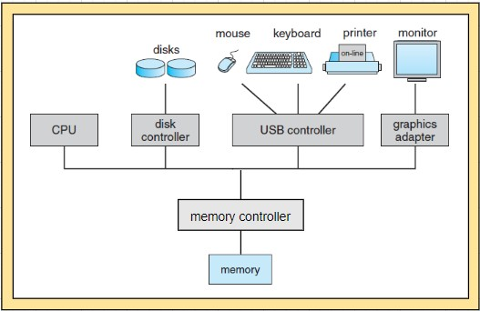
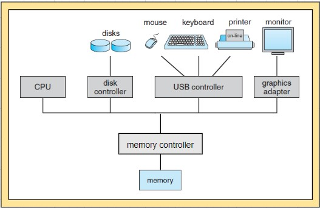

ജയകുമാർ നായർ തയ്യാറാക്കിയത്
introduction
 - what operating systems do
= a computer system can be divided roughly into four components
# hardware
# operating system
# application programs
# users
= operating system manages computer hardware, system programs, application programs and users
= an operating system acts as an intermediary between the user of a computer and the computer hardware
= operating system is the program running at all times on the computer called the kernel
= 2 other types of programs along with the kernel are
# system programs (associated with the operating system but are not necessarily part of the kernel)
# application programs (not associated with the operation of the system)
= mobile operating systems often includes a middleware (set of software frameworks provides services to application developers)
- computer-system organization

= computer-system operation
# a modern computer system consists of one or more CPUs and a number of device controllers connected through a common bus that provide access to shared memory
# each device controller is in charge of a specific type of devices
# CPUs and device controllers can execute in parallel competing for memory cycles
# memory controller synchronizes access to the memory
= storage structure
= i/o structure
computer-system architecture
operating-system structure
operating-system operations
process management
memory management
storage management
protection and security
kernel data structures
computing environments
open-source operating systems
summary
- what operating systems do
= a computer system can be divided roughly into four components
# hardware
# operating system
# application programs
# users
= operating system manages computer hardware, system programs, application programs and users
= an operating system acts as an intermediary between the user of a computer and the computer hardware
= operating system is the program running at all times on the computer called the kernel
= 2 other types of programs along with the kernel are
# system programs (associated with the operating system but are not necessarily part of the kernel)
# application programs (not associated with the operation of the system)
= mobile operating systems often includes a middleware (set of software frameworks provides services to application developers)
- computer-system organization

= computer-system operation
# a modern computer system consists of one or more CPUs and a number of device controllers connected through a common bus that provide access to shared memory
# each device controller is in charge of a specific type of devices
# CPUs and device controllers can execute in parallel competing for memory cycles
# memory controller synchronizes access to the memory
= storage structure
= i/o structure
computer-system architecture
operating-system structure
operating-system operations
process management
memory management
storage management
protection and security
kernel data structures
computing environments
open-source operating systems
summary
operating-system structures
operating-system service
user and operating-system interface
system calls
types of system calls
system programs
operating-system design and implementation
operating-system structure
operating-system debugging
operating-system generation
system boot
summary
processes
process concept
process scheduling
operations on processes
interprocess communication
examples of ipc system
communication in client–server systems
summary
threads
overview
multicore programming
multithreading models
thread libraries
implicit threading
threading issues
operating-system examples
summary
process synchronization
background
the critical-section problem
peterson’s solution
synchronization hardware
mutex locks
semaphores
classic problems of synchronization
monitors
synchronization examples
alternative approaches
summary
cpu scheduling
basic concepts
scheduling criteria
scheduling algorithms
thread scheduling
multiple-processor scheduling
real-time cpu scheduling
operating-system examples
algorithm evaluation
summary
deadlocks
system model
deadlock characterization
methods for handling deadlocks
deadlock prevention
deadlock avoidance
deadlock detection
recovery from deadlock
summary
part three memory management
main memory
background
swapping
contiguous memory allocation
segmentation
paging
structure of the page table
example: intel 32 and 64-bit architectures
example: arm architecture
summary
virtual memory
background
demand paging
copy-on-write
page replacement
allocation of frames
thrashing
memory-mapped files
allocating kernel memory
other considerations
operating-system examples
summary
part four storage management
mass-storage structure
overview of mass-storage structure
disk structure
disk attachment
disk scheduling
disk management
swap-space management
raid structure
stable-storage implementation
summary
file-system interface
file concept
access methods
directory and disk structure
file-system mounting
file sharing
protection
summary
file-system implementation
file-system structure
file-system implementation
directory implementation
allocation methods
free-space management
efficiency and performance
recovery
nfs
example: the wafl file system
summary
i/o systems
overview
i/o hardware
application i/o interface
kernel i/o subsystem
transforming i/o requests to hardware operations
streams
performance
summary
protection
goals of protection
principles of protection
domain of protection
access matrix
implementation of the access matrix
access control
revocation of access rights
capability-based systems
language-based protection
summary
security
the security problem
program threats
system and network threats
cryptography as a security tool
user authentication
implementing security defenses
fire walling to protect systems and networks
computer-security classifications
an example: windows 7
summary
virtual machines
overview
history
benefits and features
building blocks
types of virtual machines and their implementations
virtualization and operating-system components
examples
summary
distributed systems
advantages of distributed systems
types of network based operating systems
network structure
communication structure
communication protocols
an example: tcp/ip
robustness
design issues
distributed file systems
summary